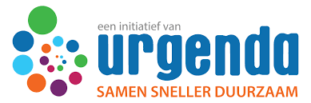
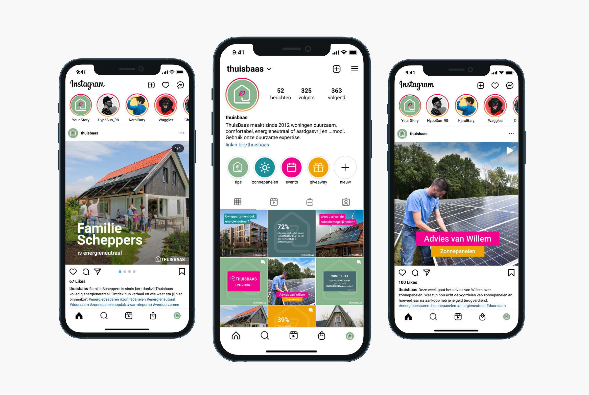

Thuisbaas richt zich op het energie
neutraler maken van woningen.

Urgenda
Met mijn groepsgenoten Max, Ricardo, Roxanne, Luuk en Lise heb ik aan het Urgenda project gewerkt. Als groep
hebben wij ons op de dochteronderneming Thuisbaas gericht. De
opdrachtgevers van dit project zijn Martijn Scheutjens en Verena Bald waarmee wij eenmaal per week een
online meeting hadden om zo de voortgang te presenteren en vragen te kunnen stellen.
Opdracht
Thuisbaas richt zich op het energie neutraler maken van woningen. Dit
doen zij door pakketten aan te bieden aan verschillende huishoudens. Het is momenteel nog niet bekend genoeg
bij de kleinere woningen. Voorheen was het vrijwel onmogelijk om voor kleine woningen een energie neutraal
pakket te implementeren, maar met het pakket van Thuisbaas is dat verleden tijd. Gedurende dit project wordt
er een focus gelegd op de doelgroep 40 tot 65 jaar.
Hoofddoel
Het hoofddoel van Thuisbaas is om meer naamsbekendheid en klandizie te
genereren. Hierbij ligt de focus op het energieneutraal maken van appartementen. Thuisbaas wil dus meer
mensen helpen met hun appartement aardgasvrij te maken, maar hoe bereiken we die mensen om naar Thuisbaas te
komen?
Proces
In het project heb ik mij op twee onderdelen gefocust: Google Analytics en de sociale media.
Voor
social media heb ik als eerste stap een algemeen onderzoek uitgevoerd met als onderzoeksthema de trends in
social media gebruik voor de platformen Instagram en TikTok. Op basis hiervan heb ik een social media
strategie geschreven voor Instagram gericht op Thuisbaas waarin onder andere ook de nieuwe
doelen zijn opgesteld. Met deze doelstellingen in het achterhoofd heb ik content gemaakt die past bij het
opgestelde plan en de huisstijl van Thuisbaas. Dit heb ik vervolgens weer verwerkt in een
contentplanning.
Naast social media heb ik voor Thuisbaas ook een
Google Analytics analyse uitgewerkt, hieruit zijn verbeterpunten voor de website gekomen. In Google
Analytics heb ik vervolgens doelen opgesteld voor het aanmelden voor het contactformulier, advies woonhuizen
en advies appartementen. Door deze opgestelde doelen met trechters is inzichtelijk hoeveel mensen deze
doelen uitvoeren en waar het eventueel in het aanmeldproces misgaat.
Voor een gedetailleerde
uitwerking van één van de opdrachten is onder aan de pagina een overzicht te zien met van mijn
werkzaamheden.

Eindoplevering
Aan het eind van het project heb ik de opleveringen gepresenteerd aan de opdrachtgevers van Thuisbaas in de
vorm van een eindpresentatie. Ik heb hierin het onderdeel Google Analytics gepresenteerd. In de bijlage
hieronder is een de eindpresentatie zichtbaar waarin alle opleveringen langskomen.
Feedback opdrachtgevers
Op basis van het gehele proces en de eindpresentatie waren Martijn en Verena erg enthousiast over de
opleveringen. Eigenlijk op elk gebied (SEO, Social Media en Analytics) hebben ze nieuwe inzichten kunnen
opdoen die ze ook gaan toepassen of al zijn toegepast zoals bijvoorbeeld de menustructuur op de website.
Voor SEO hadden ze echter nog graag een eindscan gehad maar vanwege een te kort tijdsbestek sinds de
aanpassingen aan de website kon dit niet meer voor de eindoplevering worden uitgevoerd.
Ook op het gebied van de communicatie en de online meetings waren ze tevreden en gaven ze aan dat het
prettig samenwerken was en dat we als groep altijd goed voorbereid waren.
Reflectie
Mijn groepsrol van het project was dat ik de leidersrol had over het sociale media en Google Analytics
aspect
van de opdracht. Als “leider” van het social media team probeerde ik er voor te zorgen dat iedereen wist
welke
taak hij/zij kon oppakken.
Verder heb ik in de meetings met de opdrachtgevers van Urgenda verschillende keren opleveringen
gepresenteerd
zoals bijvoorbeeld de Google Analytics analyse of een social media advies en content. Ik merkte tijdens het
presenteren dat dit eigenlijk wekelijk steeds beter ging. Op het begin was het nog een beetje aftasten ook
omdat
je elkaar nog wat minder goed kent, maar uiteindelijk heb ik denk ik duidelijk opleveringen kunnen
voordragen.
Voor een volgende keer mag ik nog wel wat meer en eerder zeggen als iemand niet binnen de afgesproken tijd
een
taak niet had afgemaakt. Het kwam namelijk nog weleens voor dat er in de ochtend dat het af moest zijn er
nog
een extra dag voor de uitwerking nodig was. Dit gaf ik dan minder snel aan waardoor er een niet volledig
afgewerkt product kon worden afgeleverd. In de loop van het project ging ik dat wel beter aangeven waardoor
de
kwaliteit van het eindproduct omhoog ging.
Uiteindelijk ben ik erg trots op wat ik allemaal heb
kunnen doen qua sociala media opleveringen en Google Analytics en ook hoe het eindresultaat eruit is komen
te zien. Ik kon erg goed mijn leerdoelen kwijt in de opdracht waardoor eigenlijk ik alles wat ik deed zowel
relevant was voor de opdrachtgever als voor mijzelf. Ik ben ook trots dat de opdrachtgevers blij zijn met de
opleveringen en er ook echt wat mee gaan doen of al hebben gedaan.